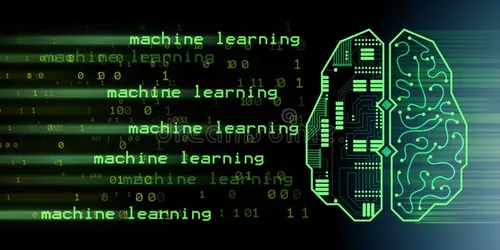

What Are Programming Languages ?
You may be wondering how programmers (humans) pass instructions to computers. This is done with
programming languages.
Human languages like English and Spanish have a syntax to guide the composition of phrases and
sentences. Programming languages also have a syntax that guides how programmers compose the logic behind
the code written.
1. Machine Language
Ever heard the phrase, ‘computers understand only 1s and 0s’? This is machine language (or machine
code). It’s a set of binary digits (1s and 0s) used by a computer’s CPU to execute directly.

A computer has transistors, tiny electric switches with two options, on (for 1s) or off (for 0s). The
computer’s CPU can read combinations of these on/off electric signals and create the desired output. In
general, machine code is referred to as a low-level language.
2. Assembly Language (ASM)
These were introduced because machine code can be tedious and prone to error. So, instead of using
binary digits, code is written with commands that include symbols and characters.
As a computer can only execute 0s and 1s (machine code), programmers must use an assembler to translate
assembly language into machine code before execution.
Still, this isn’t human-friendly, and it requires in-depth knowledge of computer memory and CPU
processes to make sense of it. Like machine code, assembly language can also be referred to as a
low-level language.
3. Mid-Level Language
When you move away from low-level languages, you tend to encounter the higher-level languages that most
people think of when they hear the term programming language.
And while it’s okay to bundle these all together, it can help to divide these modern languages into two
sub-categories, starting with mid-level languages.
These allow you to write in more human-friendly syntax while retaining access to a computer system's
abstraction layer. You can still control the underlying hardware directly, making mid-level languages a
bridge between lower and higher-level languages.
4. High-Level Language
Much like mid-level languages, when you hear the term programming language, these are often what’s being
referred to. Most computer programmers use them for their day-to-day activities and work.

High-level languages use special translators called compilers to translate into machine code, allowing
computers to execute the code logic.
These languages have a human-friendly syntax and include general purpose programming languages like
Python, JavaScript, and PHP. You can also count domain-specific languages like SQL and HTML as
high-level.